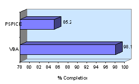

Based on an internal benchmark using the MCNC benchmark suite of circuits, VBASE converged on all but one circuit. PSpice failed to converge on 5 circuits and produced simulation errors on 3 circuits.
